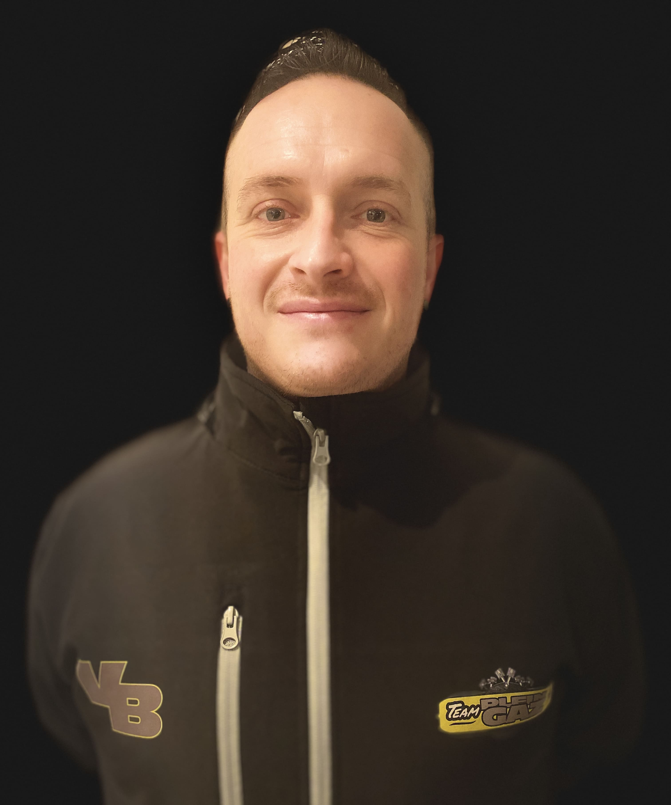
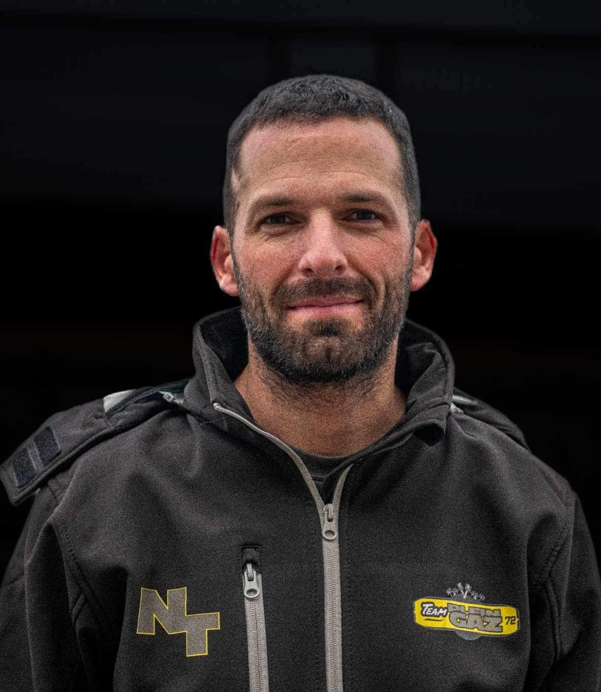
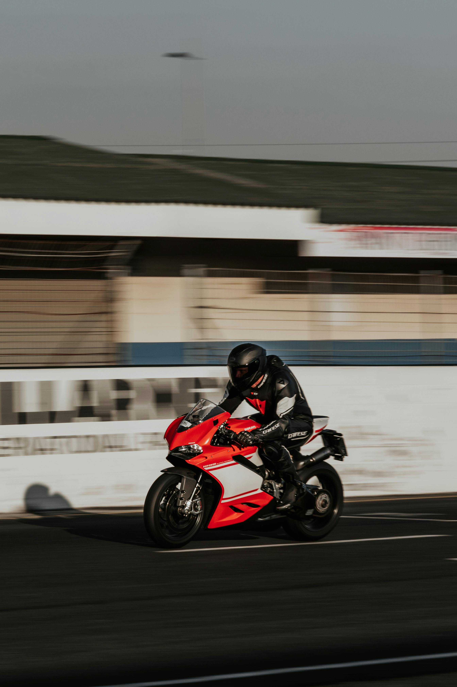
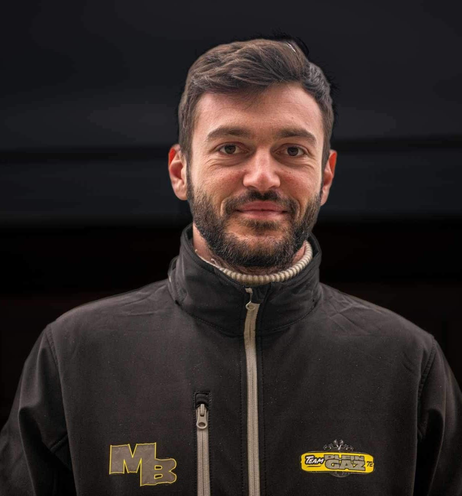

Vincent BRIDEL
Vincent BRIDEL
-
2018 - 12H de Magny-Cours
20ème au scratch -
2019 - 24H de Barcelone
11ème Superstock 1000 26 ème au scratch - 2021 - Ultimate Cup Le Mans et le Vigeant
-
2022 - 24h de Barcelone
8ème Superstock 1000 et 15ème au scratch

Nicolas THEROUIN
Nicolas THEROUIN
- 2006 - Championnat de France 125 endurance
- 2014 - Coupe Pirelli Supersport - 4ème
-
2016 - 24H du Mans Motos
15ème Superstock 1000 28ème au général -
2016 - 24H de Barcelone
3ème EWC 16ème au général - 2018 - Bol D'Or
- 2019 - 23H60
- 2021 - Ultimate Cup 600 4ème au Mans
-
2022 - 24h de Barcelone
8ème Superstock 1000 et 15ème au général - 2022 - Chimay IRRC Supersport - 15ème
- 2023 - Vainqueur des 24H de la Réunion BeOn moto3
- 2023 - 23H60
- 2023 - IRRC Supersport (Belgique, République Tchèque, Allemagne)
- 2023 - Finale du trophée Roadsterà Estoril

Hervé CHERON
Hervé CHERON
- 2006 et 2007 - FSBK open 125
- 2009 / 2010 / 2011 - Coupe Ducati et Course en CFE
-
de 2011 à 2020 - 23H60 25 power
- 23h60 - 9 victoires et une 2èmeplace
- O3Z - 6 Victoires 2ème au championnat - 2016 - 24H du Mans Motos - 15ème
- 2017 - 24H du Mans Motos - 18ème
- 2018 - 24H du Mans Motos et Bol d'Or
- 2021 - 24H du Mans Motos
- 2022 - 24h de Barcelone
- 2022 - Chimay IRRC Supersport - 15ème
- 2023 - Vainqueur des 24H de la Réunion BeOn moto3
- 2023 - 23H60
- 2023 - IRRC Supersport (Belgique, République Tchèque, Allemagne)
- 2023 - Finale du trophée Roadsterà Estoril

Mathieu BOUVIER
Mathieu BOUVIER
- 2015 - Course de côte - Cat supermotard
-
2016 - Plusieurs podiums
Championnat de course de côte - Cat supermotard - 2016 - Championnat Bretagne de course de côte - Cat open et 600ccgue
- 2017 / 2018 - Ultimate Cup - 600cc
- 2018 2 podiums en Ultimate Cup 600
- 2019 Superracer Loheac - 5ème
- 2021 Podium de ka VIP Race Noire 1000cc
- 2021 23H60
- 2022 Plusieurs podiums en championnat de ligue 25 power cat 15cvH de R
- 2022 - Victoire cat électrique 24h de Rouen
- 2022 - 24h de Barcelone